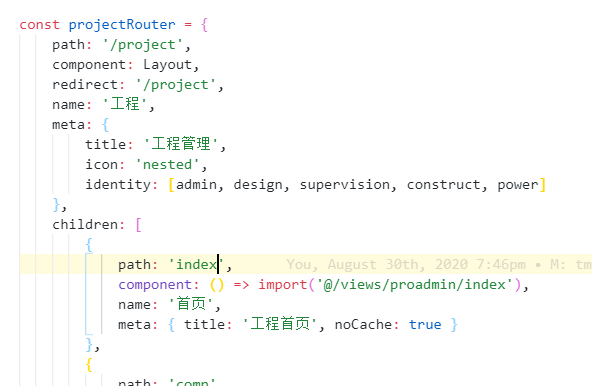

0. 循环
while, for 是循环，废品回收当然也是循环。（内容自由 & 形式自由）
前几周实际开发（裁缝）过程中遇到的问题。
这大概是个什么意思呢，就是代码里面有个地方在报错，至于报错的原因，则是：
1 | Message.error(error || "Has Error"); |
裁缝的是 vue-element-admin 的 这个地方。
但是由于这次传入的错误，并非源代码中所期望的数据类型，从而应该使用：
1 | Message.error({ |
排开这一个地方出错就报 10 个错的地方不谈，那么 Console 中便没有其他的 warning & error 了。
但是我一开始 并不知道这一点 ！
由于 error 出现在 user.js 的后面，我第一想到的是 user.js 里面出了问题，尤其是 getInfo。
1 | // /src/store/modules/user.js |
很抱歉我没有看出任何有问题的地方。
聪明的我也立刻发觉自己是个 sb，接下来应该看调用这个 action 的那层：
1 | const { id } = await store.dispatch("user/getInfo"); |
很抱歉我还是没有看出哪里会导致循环。尽管如此，我是知道 permission/generateRoutes 里面肯定是有问题的。
这次做的比较大的改动，就是把源代码中用 root 来区别路由权限的部分，全部换成了 identity，虽然看起来改个变量名就行了，但是无论从数据类型、含义、使用范围，都变得不一样了。因此问题还是有的。
由于我实在看不出 /src/store/modules/permission.js 这个文件到底有什么问题，debug 一时间陷入了困境，这一困就是两周……
当然我承认，中途我划水划得有点厉害，但是每天打开编辑器，看到这百行左右的代码找不出来 bug，重启的心都有了。
1. try-catch
在一位学长的帮助下，可算定位了这个问题。
问题的确出在 /src/store/modules/permission.js 文件中，这个可以参考 这里，反正就这三个函数，差不多的。
死循环是可能出现在路由处理方面的。由于 vue-router 这个强大的插件提供嵌套路由管理功能，也就是父子路由。那么在使用 router.addRoutes 添加定义的路由时，就应在此之前完成一个递归操作。
而递归操作写不好，就死循环了…
这也是我一直怀疑的地方，我一直认为自己哪里改改错了，但是在和源代码对比之后，也没有发现自己太离谱的地方，也没发现可以导致死循环的地方。
至少我觉得我的那几个 if 没啥问题。
刚才只展示了一部分代码，实际上却是这样的：
1 | // /src/permission.js |
试想，如果 try 里面出了问题，那不就到了 catch 执行代码吗…
智商本就不太高的我万万没有考虑到这一点。但是执行 catch 块中代码又怎样呢？这里面除了刚才提到能一口气爆 10 个 error 的 Message.error 之外，也没有什么奇怪的。
2. next
问题到底出在哪里，还是看不出来，这需要再往外看一层：
1 | // /src/permission.js |
这也就不难理解了，是在 try 中出了问题，而后进入了 catch，但是 catch 中的最后一句却是重定向到 login 界面。由于 to.path 是 /，之后的各个逻辑判断致使又回到了调用 getInfo 的地方。
也就是说，这个循环是由 try-catch-next-beforeEach 共同作用得到的…
3. solution
至于解决问题的方法嘛。
首先，一下子爆 10 个错的 Message.error 肯定是不能不改的。
接下来，为了防止 next 进入错误的路由，next 中参数应该换为不能造成循环的。
在修改完这两个地方之后，报错也显得正常了起来：
vue-router 中的 match, redirect, _createRoute 之间明显发生了循环。
盯住行数，发现事情或许和 record.redirect 有关。而这个嘛，一看提交历史，貌似我是改过 router 相关文件的。
最后，问题的本质是：

projectRouter redirect 的是 /project，但是其主页却被我在 8.30 改成了 /project/index，只是为了和 views 的目录路径匹配。
明明找不到，却还要硬找，啊这…
4. 所以
以后记住，看事情看远点好吗。
别老盯着两三行代码看 bug，那两三行真没错。